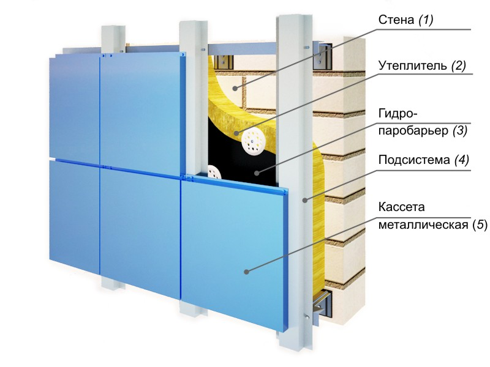
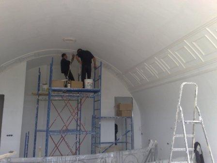

Навесные вентилируемые фасады

Схема устройства вентилируемых фасадов
Вентилируемые фасады — это высокотехнологичные навесные конструкции, используемые для эстетического оформления здания. А также — для защиты несущих стен от негативного воздействия факторов внешней среды.
В странах СНГ навесные вентилируемые фасады стали популярными в последние 15 лет. Решение основывается на применении сборных металлических систем. На которые, в свою очередь, при помощи специального крепежного оборудования, навешиваются те или иные отделочные материалы.
Технология наиболее востребована при обустройстве высотных зданий. Впрочем, навесные фасады в последнее время можно увидеть и на малоэтажных зданиях общественного назначения. В качестве отделочных материалов применяются терракотовые, линеарные, композитные и фиброцементные панели. Также может быть использована фасадная доска и специальные стеклоблоки.
Среди преимуществ решения следует отметить то, что несущая стена надежно укрыта от окружающей среды. Но есть небольшое пространство, посредством которого поверхность качественно вентилируется. Что, в свою очередь, исключает вероятность появления сырости и плесени.
Материалы для отделки интерьера

Облицовочные работы в интерьере
В настоящее время на рынке представлены как обычные, так и огнеупорные отделочные материалы, предназначенные для обустройства интерьера:
Потолочные, включая штукатурку, гипсокартон, вагонку и натяжные потолки;
Стеновые, включая обои, лакокрасочные покрытия и штукатурку;
Напольные, включая рулонные и жесткие покрытия, а также декоративно оформленные наливные полы.